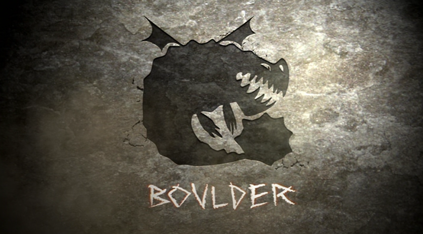
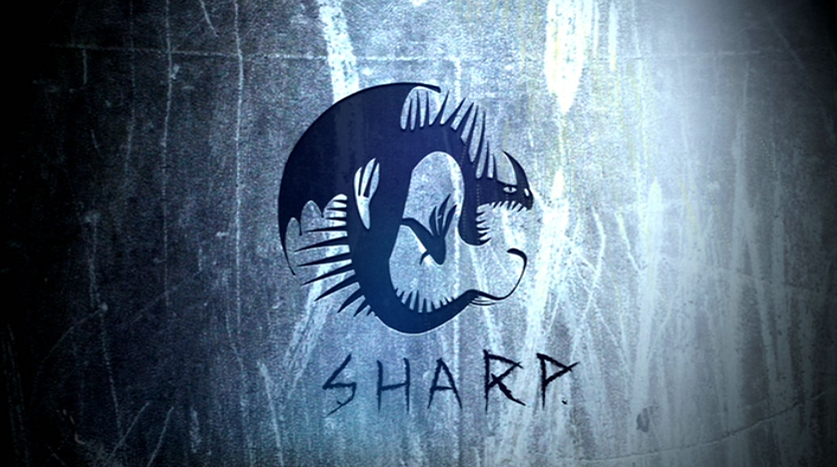
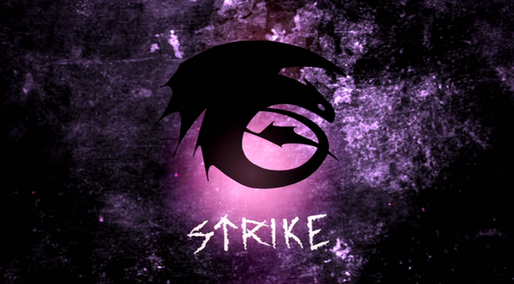

Dragon Classes
The dragons known to the Hairy Hooligan Tribe are grouped into seven "classes" based on their similar abilities or features (unlike modern taxonomy that is based on shared characteristics). Dragon can also be moved between classes if new discoveries abbout a species make it necessary.
The seven classes are Boulder, Mystery, Sharp, Stoker, Strike, Tidal, and Tracker.
Boulder Class Dragons
Boulder class dragons are tough and associated with the earth. They can eat rocks, which many of them melt within thier stomachs and regurgitate as lava blast. Although they have small wings compared to their body size, they are able to fly as fast and as high as most other dragons can.
Mystery Class Dragons

Little is known about the mystery class dragons, due to their stealthy and sneaky nature. Dragons in this class are generally more feared than those in other classes. This class tends to include the most diverse and interesting range of dragons out of all, most of whichexhibit extremely rare unique traits.
Sharp Class Dragons
Sharp class dragons are vain and prideful, and all of them possess sharp body parts. Most of these dragons can fire extremely sharp and poisonous projectiles from their bodies, which can quickly be regenerated. Sharp class dragons adore being stoked and generally made fuss of. They especially love being complimented, due to their nature.
Stoker Class Dragons

Stoker class dragons are hot-headed fire breathers. a notable characteristic of these dragons is their high shot limit and firepower. Some of them are capable of setting themselves, or part of their body on fire. When stoker class dragons become sick or exhausted, they might loose their ability to produce flames.
Strike Class Dragons
Strike class dragon are characterized by their extreme speed, high jaw strength, and superior inteligence. Some members of this possess pinpoint accuracy and unique abilities that allows them to navigate in their respective environment/atmomsphere.
Tidal Class Dragons

Almost all tidal class dragons live in ocean, although some of them have amphibian biology allowing them to survive on land. Few of these dragons are capabble of creating flames, but may can generate electricity. Dragons of this class are generally larger than those of other classes. Despite this, they are usaully very peaceful ocean dwellers who prefer to be left alone and when trained, are exceedingly loyal. Tidal class dragons don't well to signs of aggression.
Tracker Class Dragons
Natural born hunters, tracker class dragons have a highly acute sense of smell and taste that enables them to effortlessly track down and find anything.
Contact us
Contact no.: 0991-482-1222
Email: elijahlaqui@gmail.com
Facebook: Elijah Kean Laqui